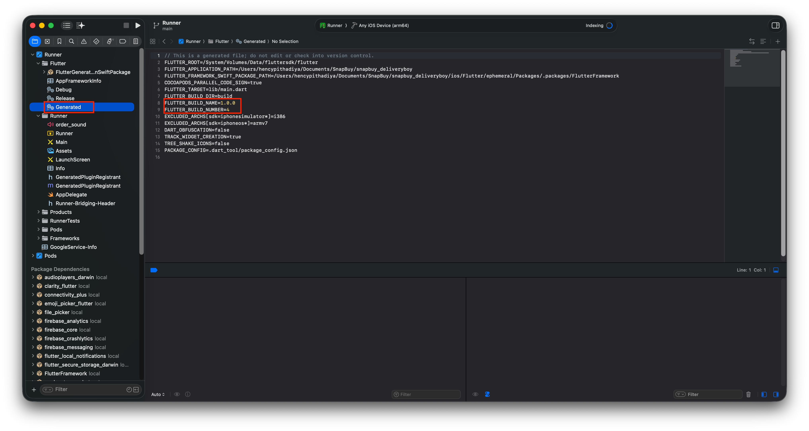
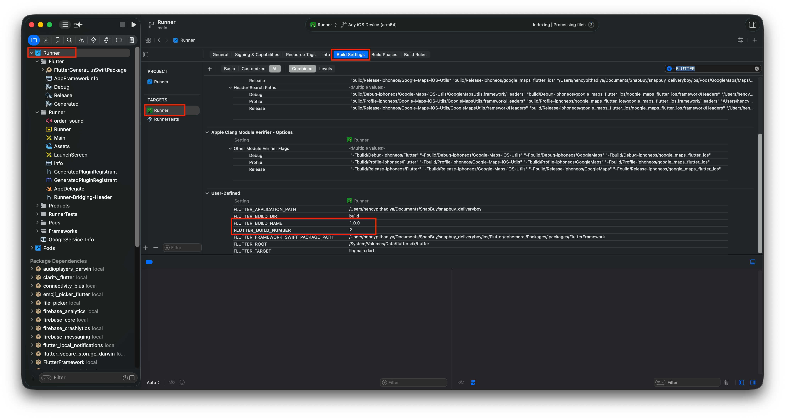

Change the App Version
Update the version number before every new Play Store / App Store upload.
Version Format
Open pubspec.yaml (project root) and find the version line:
version: 1.0.0+1The value has two parts separated by +:
| Part | Maps to (Android) | Maps to (iOS) |
|---|---|---|
1.0.0 (before +) | versionName | CFBundleShortVersionString |
1 (after +) | versionCode | CFBundleVersion (build number) |
Rules
- Version name (
1.0.0) — the user-visible release number. Bump it for any release that introduces new features, fixes, or breaking changes. Follow semantic versioning (MAJOR.MINOR.PATCH). - Build number (
+1) — must be a strictly increasing integer. The Play Store and App Store reject uploads with a build number equal to or lower than a previously uploaded one — even for the same version name.
Steps to Change
- Open
pubspec.yaml. - Update the
versionline to the new value, for example:version: 1.1.0+2 - Save the file.
- Run:
flutter clean && flutter pub get - Build your release artifacts:
- Android —
flutter build appbundle --release - iOS — see the iOS-specific steps below before building
- Android —
The new version will now show on the Play Store / App Store listing after upload.
iOS — Additional Xcode Steps
iOS requires manually updating the version values in two places inside Xcode after changing pubspec.yaml.
Step 1 — Update the Generated file
- Open the project in Xcode.
- In the left sidebar, navigate to Runner → Flutter → Generated.
- Open the
Generatedfile. - Find and update the following two lines to match your new version:
FLUTTER_BUILD_NAME=1.1.0
FLUTTER_BUILD_NUMBER=2
Step 2 — Update Build Settings
- In the left sidebar, select Runner → Runner (under TARGETS).
- Click the Build Settings tab at the top.
- Make sure All and Combined filters are selected.
- Scroll down to the User-Defined section.
- Update
FLUTTER_BUILD_NAMEandFLUTTER_BUILD_NUMBERto match your new version.

After both steps are done, build the iOS release:
flutter build ipa --releaseWARNING
Always increment the build number for every store upload, even if the version name stays the same. The stores reject duplicate build numbers, and rebuilding without bumping will block your submission.